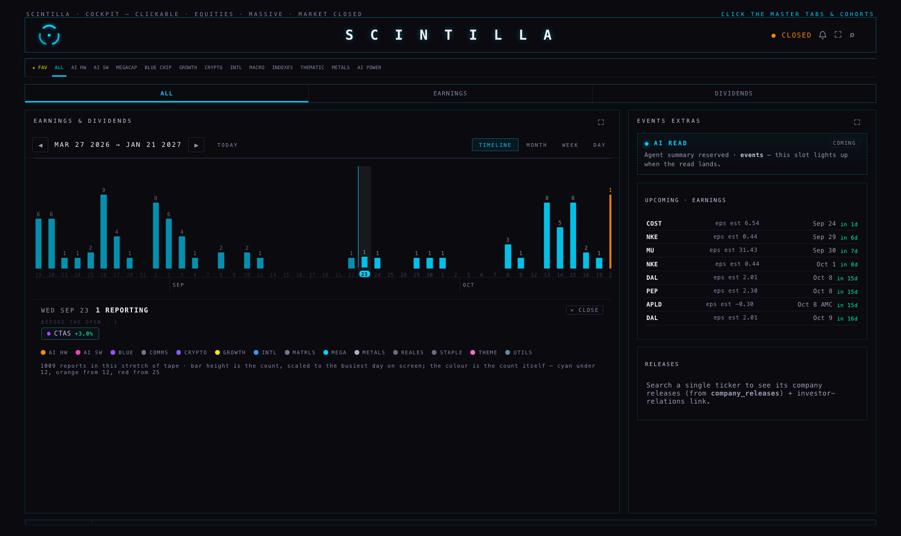
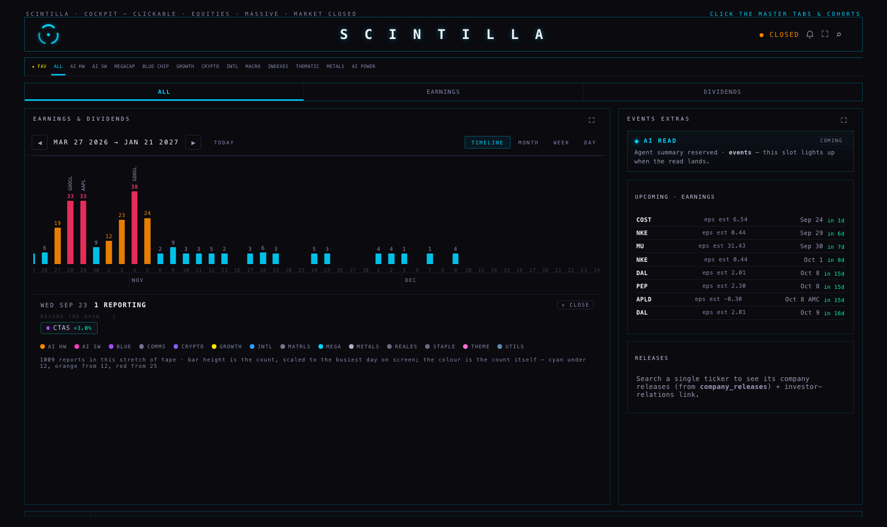
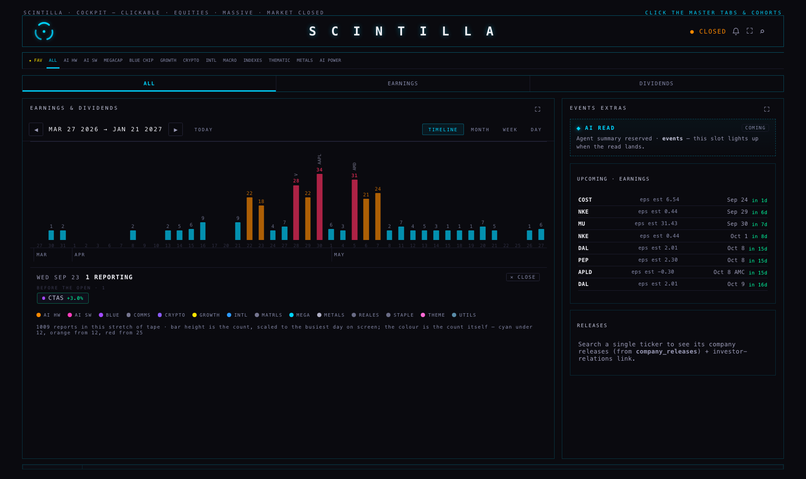
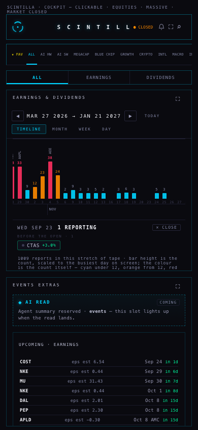
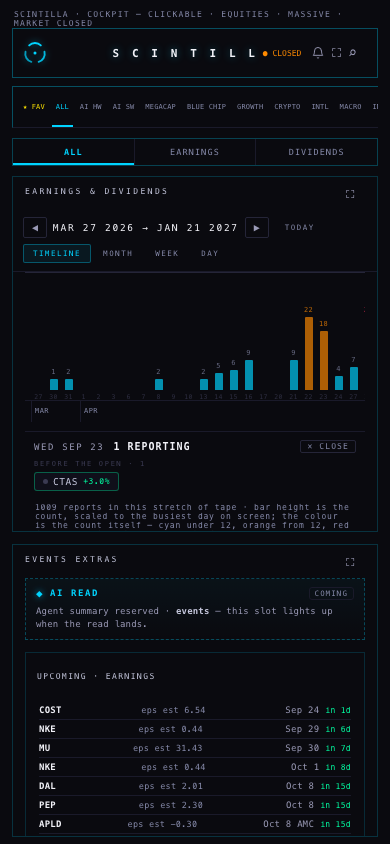
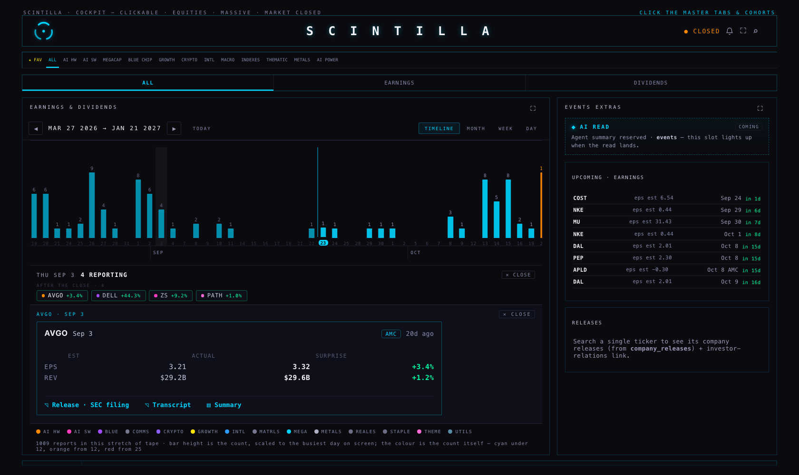
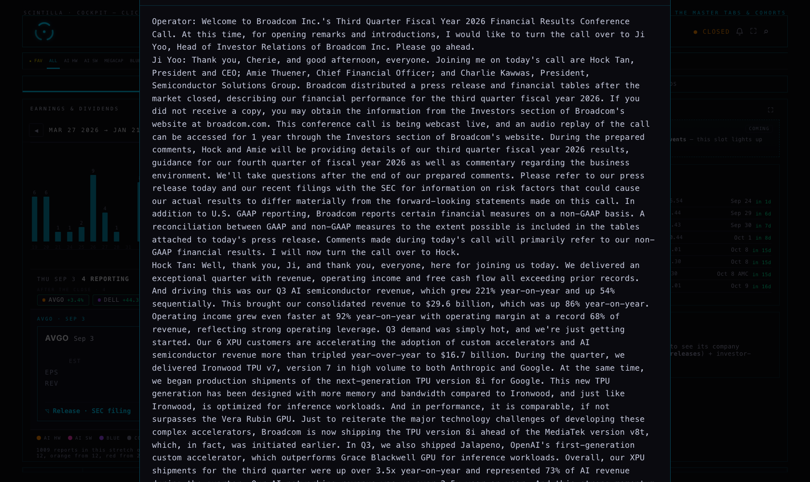

EVENTS now opens on a timeline you drag sideways: one bar per trading day, as tall as the number of your names reporting that day, history to the left and what is coming to the right. MONTH, WEEK and DAY are all still there, one tap away, unchanged. Nothing is deployed: branch hub/earnings-timeline-20260923, built from Hub production 8927dc4.
“Maybe something that's more like a timeline scrolling left to right that shows counts — September 2 has more than September 1 — and it's a scrollable way of going to the history too. Like a chart of the tick of the earnings tape… I feel like an oscillator is better of some type, a scrollable oscillator left to right.”
Every bar is one trading day. Its height is how many of the names the Hub tracks report that day. Its colour is that same number, on the load law the MONTH view already uses: cyan under 12, orange from 12, red from 25. Today is marked with a cyan day-number and a line. The biggest name reporting rides the top of the tall bars. The months are written underneath.
The one thing that moves, and the one thing that never does. The height is scaled to the busiest day actually on screen, and it is re-scaled as you drag — that is the answer to “I'm seeing a lot of empty calendar days… the view should auto-adjust in some way”. A quiet fortnight fills the track with its own shape instead of lying flat. The colour is never re-scaled: red always means 25 or more reports, in season and out of it, so the two can never be confused. When the whole stretch on screen is quiet, the tape says so in words and gives the real number.






The tape lands with the next day that actually has reports already open underneath it, so entering EVENTS shows the working list straight away. Closing it keeps it closed.
| What you see | Where it comes from |
|---|---|
| The height and the number on a bar | A count of rows in earnings_events for that date, filtered to the names in cohorts and then scoped by the cohort strip at the top, exactly like the rest of the room. Nothing is estimated. |
| The name on a tall bar | The biggest by market value among that day's reporters, using the market caps the board has already read. If the board has not loaded yet, the note says so and the names are alphabetical for the moment. |
| The day panel and its cards | The same functions the WEEK view uses — the same chips, the same grouping, the same card — so a day here and the same day there can never disagree. |
| “before the open / after the close” | earnings_events.report_time. Where it is empty the panel says time not announced. It is never guessed. |
| The window | 180 days back and 120 days forward of the anchor, read in two requests so a busy season cannot silently lose its far end. The arrows move the window three months; TODAY brings it back. |
Measured in the browser on this branch: 215 trading days drawn, 128 of them carrying reports, 1,009 reports in the window on the ALL scope, busiest day 2026-11-04 with 38. No page errors at either size.
Because the stored calendar carries no time for them. This is an upcoming problem only: rows that have already reported nearly all carry one.
| Measured 23 Sep, your tracked names | Rows | With a report time |
|---|---|---|
| The next 30 days | 81 | 2 (2.5%) |
| The 30 days behind | 42 | 39 (93%) |
The source I chose: Nasdaq's own earnings calendar. It is public, needs no key, and states the time as “time-pre-market”, “time-after-hours” or “time-not-supplied”. I measured all 23 weekdays of the next 30 days against our rows.
| Report time on the next 30 days | Before | After the backfill |
|---|---|---|
| Rows with a stated time | 2 | 37 |
| Coverage | 2.5% | 45.7% |
| Costco · 24 Sep | — | AMC (after the close) |
| Micron · 30 Sep | — | AMC (after the close) |
| ASML · 14 Oct | — | BMO (before the open) |
Why it is not 100%, and why that is the honest answer. Of the 81 rows: 35 get a time; 31 are rows Nasdaq lists but marks “time not supplied” — nobody has announced one yet; 13 are not in Nasdaq's calendar for that day at all; 2 already had a time. Those 44 keep saying time not announced. Across Nasdaq's whole window, only 128 of 543 rows carry a stated time, so this is the state of the world rather than a gap in the read.
The other candidates. FMP's calendar and Finnhub's hour field both need an API key, and there is no key on this machine or in the Hub (the Hub deliberately never calls FMP from the browser), so I could not measure either and do not claim a number for them. Nasdaq needs no key and can be called from the backend the same way. The issuers' own IR pages are the most authoritative for the biggest names and are the natural third step, one name at a time.
A finding I did not act on: for 9 rows our stored date and Nasdaq's disagree — NKE, DAL, WFC, PGR, CSX, ELV, PLD, PM, PG. The backfill matches on ticker and date, so it writes nothing for these: a different date is a different event. A wrong date puts a name on the wrong bar, so this is worth its own pass.
supabase/migrations/20260923_earnings_report_time_source.sql adds two columns to earnings_events: report_time_source and report_time_set_at. It changes no stored value.scripts/earnings-report-time-backfill.mjs fills the times. It never guesses, never overwrites an existing time (the database filter refuses it, not just the script), matches on ticker and date, stamps every row it writes with nasdaq-calendar, and writes nothing at all unless it is given --apply and a service key from the environment.I checked the store directly. earnings_call_transcripts holds 1,405 rows. Every one carries the call's full text. Not one carries a URL. earnings_events.transcript_url is empty across the entire table, and 171 calls carry an AI summary. The newest call stored is 11 September.
So the answer to “why does no transcript row have a URL” is that the job that writes them never receives one: it is given the transcript's text by its provider, stores the text, and leaves url null. The column was never filled and nothing syncs anything back to earnings_events. That job does not live in the Hub repository and is not on this Mac, so I am naming what the data proves rather than quoting its code.
What the Hub does today, verified in the browser, not read off the page: the ◹ Transcript control appears only when a stored call sits within three days of that card's date, and it opens the stored text — I opened AVGO's 3 September card and got 39,621 characters of the real Broadcom Q3 FY2026 call, beginning “Operator: Welcome to Broadcom Inc.'s Third Quarter Fiscal Year 2026 Financial Results Conference Call”. No card links to the dead column. Where a summarised call exists, the card offers ▤ Summary or ▤ Call summary, and says which of the two it is.

One real defect found and fixed. Measured at 1680 × 1000: the transcript window came out 1,103 px tall inside a 1,000 px screen, so its own header — and its ✕ Close — sat 35 px above the top edge and could not be clicked (only the dimmed background could close it). The window is now held inside the screen it opens in: measured again, 946 px tall, close button visible.
nasdaq-calendar and when it was written, so a wrong one can be found and removed. Nothing overwrites a time you already have.prototypes/indicator-lab/ is byte-identical.Tests: 446 in tests/, 442 pass, 2 fail — the same two that already fail on production (“every place this surface prints an age uses the one function” and xfeed-publish). 19 of the passing tests are new here: 11 for the tape, 5 for the report-time rules, 3 for the transcript control.